Theorem rationalsPosDefExtension of type Forall¶
from context proveit.number.sets.real.root2_proof_temporary_context¶
see dependencies
In [1]:
import proveit
# Automation is not needed when only building an expression:
proveit.defaults.automation = False # This will speed things up.
proveit.defaults.inline_pngs = False # Makes files smaller.
# import the special expression
from proveit.number.sets.real.root2_proof_temporary_context._theorems_ import rationalsPosDefExtension
In [2]:
# check that the built expression is the same as the stored expression
%check_expr rationalsPosDefExtension
In [3]:
# Show the LaTeX representation of the expression for convenience if you need it.
print(rationalsPosDefExtension.latex())
In [4]:
# display the expression information
rationalsPosDefExtension.exprInfo()
Out[4]:
| core type | sub-expressions | expression | |
|---|---|---|---|
| 0 | Operation | operator: 1 operand: 2 | 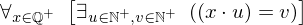 |
| 1 | Literal |  | |
| 2 | Lambda | parameter: 26 body: 3 | 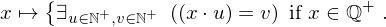 |
| 3 | Conditional | value: 4 condition: 5 | 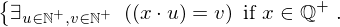 |
| 4 | Operation | operator: 6 operand: 7 | 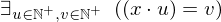 |
| 5 | Operation | operator: 24 operands: 8 |  |
| 6 | Literal |  | |
| 7 | Lambda | parameters: 9 body: 10 | 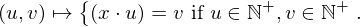 |
| 8 | ExprTuple | 26, 11 |  |
| 9 | ExprTuple | 27, 28 |  |
| 10 | Conditional | value: 12 condition: 13 | 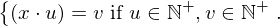 |
| 11 | Literal |  | |
| 12 | Operation | operator: 14 operands: 15 | 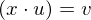 |
| 13 | Operation | operator: 16 operands: 17 | 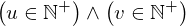 |
| 14 | Literal |  | |
| 15 | ExprTuple | 18, 28 | 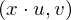 |
| 16 | Literal |  | |
| 17 | ExprTuple | 19, 20 | 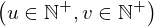 |
| 18 | Operation | operator: 21 operands: 22 | 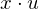 |
| 19 | Operation | operator: 24 operands: 23 |  |
| 20 | Operation | operator: 24 operands: 25 | 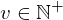 |
| 21 | Literal |  | |
| 22 | ExprTuple | 26, 27 | 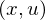 |
| 23 | ExprTuple | 27, 29 | 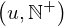 |
| 24 | Literal |  | |
| 25 | ExprTuple | 28, 29 | 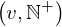 |
| 26 | Variable |  | |
| 27 | Variable |  | |
| 28 | Variable |  | |
| 29 | Literal |  |